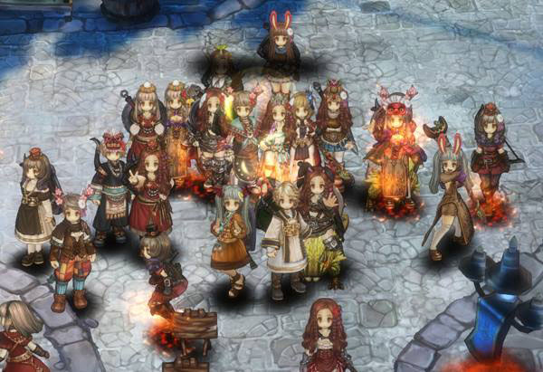

Tree of Savior Update Rank 9

Game dengan Sistem Class unik ini bulan lalu menghebohkan para pemain dengan update level cap yang sebelumnya level 330 menjadi 360 dan map baru serta sistem equip yang baru .Kini para pemain dihebohkan dengan update class baru dan update Max rank yang sebelum nya Rank-8 menjadi Rank-9.Class baru tersebut adalah Matador(Swordsman),Zealot(Cleric),Shadowmancer(Wizard),Bullet Marker(Archer).
Ke-empat class ini bukanlah class Rank-9 melainkan class Rank-8 sehingga sudah memiliki Circle 2 di Rank-9.Sebelumnya pihak IMC Games selalu melakukan update class baru sebanyak 8 class pertahun , tetapi kini IMC hanya akan melakukan update class sebanyak 4 class pertahun . Selain ke-empat class tersebut juga ada class lanjutan dari class yang sudah ada di game seperti Dragoon Circle-3,Taoist Priest Circle-2,Warlock Circle-3,Mergen Circle-2.
